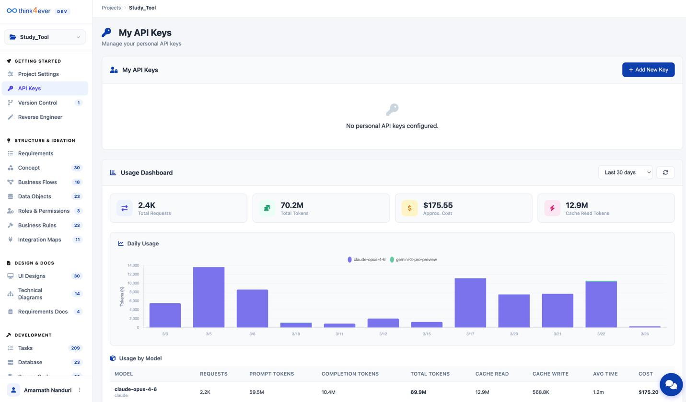
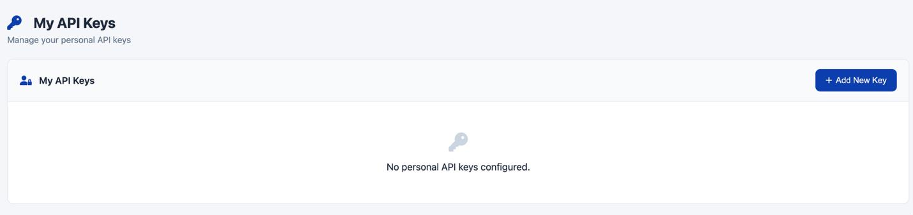
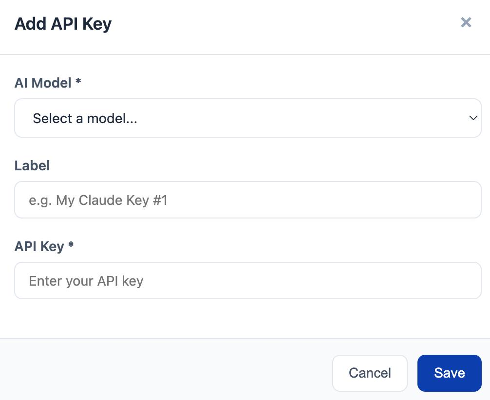
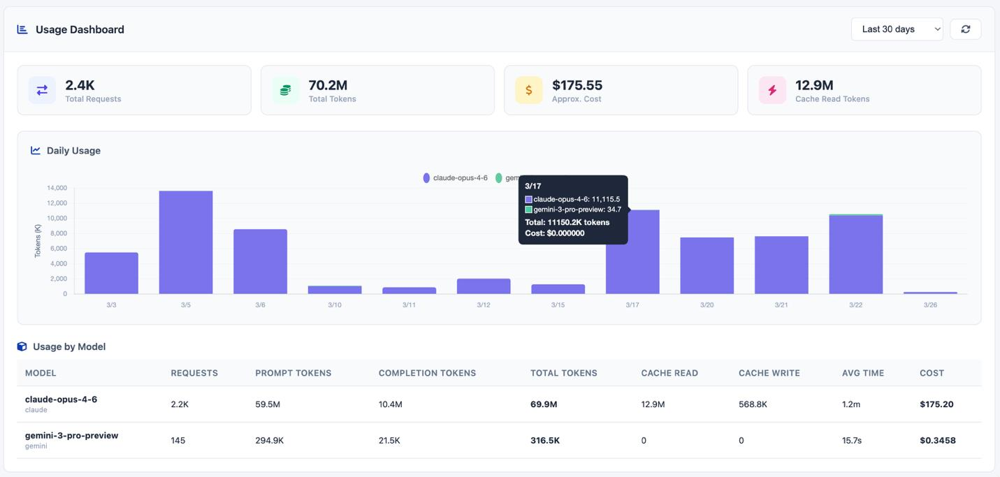
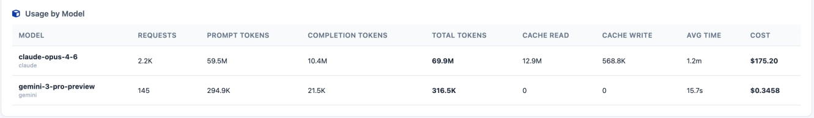
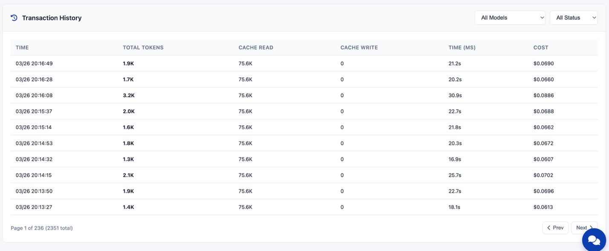

API Keys
The API Keys section is the central hub for managing your application's secure access to integrated AI models and third-party services. This page is split into two primary areas:
- Key Management: Where you can view, create, and secure your personal API keys.
- Usage Dashboard: Where you can track api requests, token consumption, and associated costs across all active models in real-time.

Access this section from the main sidebar under the Getting Started category.
Managing Your Personal API Keys
This section, found at the top of the page, lists all API keys currently configured for your account.
1. Viewing Keys
- If no keys have been set up yet, the dashboard will display a key icon with the message "No personal API keys configured."
2. Creating a New Key
- Click the blue "+ Add New Key" button.

- Follow the prompt to name and configure your new API key.
- Warning: Ensure you copy and securely store the key upon creation. For security reasons, the full key may not be displayed again.

3. Usage Dashboard (Scrollable Section)
The Usage Dashboard provides granular, real-time analytics on your project's interaction with the integrated AI services (e.g., Claude, Gemini).
3.1. Filter and Control
Located in the top-right corner of the dashboard panel.
- Timeframe Filter: Use the dropdown menu (e.g., "Last 30 days") to change the period for which data is displayed.
- Refresh Button: Click this icon to instantly update all dashboard metrics with the latest data.
3.2. Key Metrics Overview
Four key metric cards summarize the activity for the selected timeframe.
- Total Requests: The aggregate number of distinct calls made to all API models.
- Total Tokens: The total combined number of tokens processed (Prompt + Completion).
- Approx. Cost: The estimated financial cost, in USD, accrued based on the current usage period.
- Cache Read Tokens: The number of tokens retrieved from the cache, which often saves time and cost.

4. Analyzing Usage Data
Below the key metric cards are detailed visualizations and tables for deeper analysis.
4.1. Daily Usage Chart
This bar chart illustrates your Daily Usage (Tokens) over time.
- Hovering: Hover over individual bars to see the exact token breakdown for that specific day, segmented by model.
- Legend: The legend (e.g., claude-opus-4-x, gemini-1-5-pro-preview) shows which models are contributing to the daily volume.
4.2. Usage by Model
This detailed table breaks down performance metrics by specific AI model:
- MODEL: The name and provider of the AI model.
- REQUESTS: Number of requests made to this specific model.
- PROMPT TOKENS: Tokens sent to the model (input).
- COMPLETION TOKENS: Tokens generated by the model (output).
- TOTAL TOKENS: The sum of prompt and completion tokens.
- CACHE READ/WRITE: Tokens retrieved from cache versus those written to cache.
- AVG TIME: Average latency (response time) for requests.
- COST: The specific cost associated with using that individual model.

4.3. Transaction History (Detailed Logs)
Located at the bottom of the page (scroll down), this table provides a high-level transaction log for every single request.
Filtering and Sorting- All Models Dropdown: Filter the log to show only transactions for a specific model (e.g., view only Claude logs).
- All Status Dropdown: Filter by transaction status (e.g., view only "Success" or "Error" transactions).
- TIME: The exact timestamp of the request.
- TOTAL TOKENS: The tokens used in that specific request.
- CACHE READ/WRITE: Cache performance for that specific request.
- TIME (MS): The total execution time of the request in milliseconds.
- COST: The exact cost, in USD, incurred by this single transaction.
